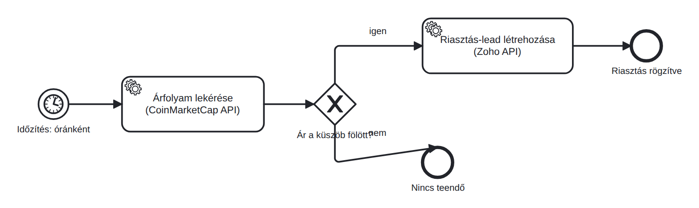

Árfolyamjelzés: API-k összekapcsolása
A CoinMarketCap API-jából árfolyamot kérsz le, feltétel alapján döntesz, és a Zoho CRM-ben jelzőrekordot hozol létre.
- összekötötted a nap két felét: az egyik API-ból olvasol, a másikba írsz, feltétellel;
- ez az első teljes, működő automatizmusod: adat, döntés, akció;
- pontosan tudod, mi lesz a hatodik napi beadandó.
Rakjuk össze, amit ma tanultál
Fiktív gyakorló eset: az ügyintéző egy árfolyamküszöb túllépéséről szeretne értesülni. A szkript lekéri az árat, összehasonlítja a küszöbbel, és találat esetén jelzőrekordot hoz létre a Leads modulban. Ez nem CRM-feladat (Task) és nem küld értesítést; a rekordot kézzel ellenőrizzük. Valódi üzleti megoldásban a megfelelő feladat- vagy értesítési funkciót is hozzá kellene kötni.

- Töltsd le a lánc-szkriptet: arfolyam_riasztas_colab.py, és illeszd be egy új Colab-cellába.
- Futtasd ugyanabban a Colabban, ahol a Zoho-tokened van. A szkript bemeneti mezőben kéri a CMC-kulcsot; a Zoho-tokenhez az ACCESS_TOKEN változót használja. Lejárt tokennél először a tokenfrissítő cellát futtasd.
- Állítsd be a küszöböt úgy, hogy a mai árnál kiváltódjon (nézd meg az aktuális árat, és írj alá egy kicsivel kisebb számot), és futtasd.
- Futtasd le még egyszer olyan küszöbbel, ami nem váltódik ki, és figyeld meg a másik ágat.
Első futásban az ár meghaladja a beállított küszöböt: a kimenet jelzi a sikeres jelzőrekord azonosítóját, és a CRM-ben megtalálod az ÁRJELZÉS kezdetű rekordot. Második futásban az ár nem haladja meg a küszöböt, ezért nem jön létre új CRM-rekord. A feltétel szigorúan nagyobb (>); egyenlőség esetén sincs új rekord.
Ha hiba van: a szkript külön jelzi a CMC- és a CRM-hibát. Nem elegendő, hogy az ár kiíródott: a CRM-válaszban is sikert kell kapnod. Lejárt hozzáférésnél frissítsd a tokent; az érvénytelen scope vagy a kötelező mező hiánya külön javítást igényel.
A nap elején kézzel rögzítettél érdeklődőt. Most egy szkript külső adatot kér le, egy megadott szabály alapján dönt, és másik rendszerbe ír. A szkript egyszer fut le; a folyamatábrán jelzett rendszeres, időzített indítást ma nem állítjuk be. Ha később automatizáljuk az indítást, az ismételt jelzések és a duplikátumok kezelését is meg kell tervezni.
Előretekintés: a hatodik napi beadandó
A hatodik napi beadandóban 40 fiktív, megadott szabályoknak megfelelő érdeklődőt készítesz, ellenőrzöd az adatminőséget, és betöltöd a saját CRM-edbe. Az import és az API is választható útvonal. A lead-létrehozás logikáját ma megismerted; a tömeges betöltés, az ellenőrzés és a bizonyítékok részletes lépéseit a hatodik nap csomagja tartalmazza.